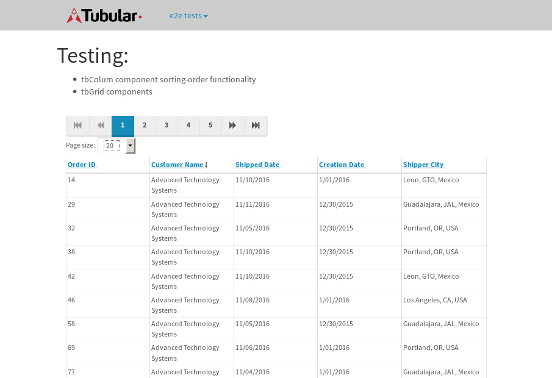
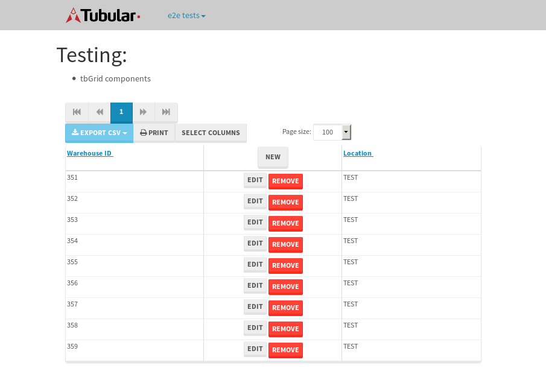
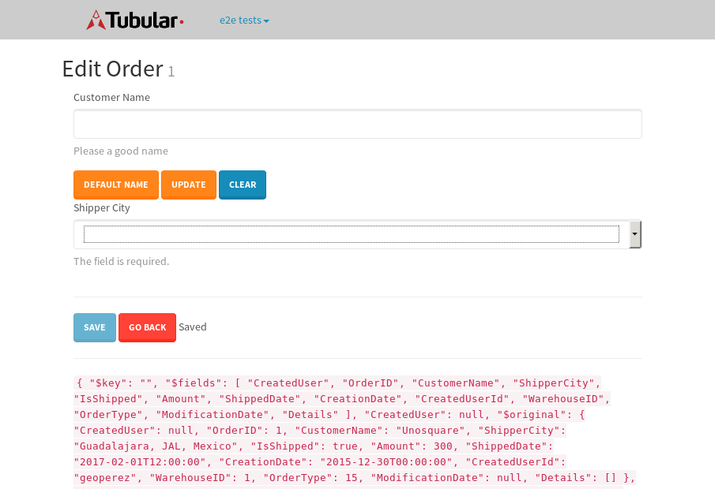

tbColumn.Grid Sorting - 175.662sTests: 5Skipped: 0Failures: 3 should sort data in ascending order then on descending order when sorting by Order Id column - 43.872sExpected '1' to be '500'.✗Expected '20' to be '481'.✗Tests passed: 50.00%should order data in ascending order when click-sorting an unsorted text column - 22.963sTests passed: 100.00%should order data in descending order when click-sorting an ascending-sorted text column - 42.919sExpected 'Advanced Technology Systems' to be 'Vesta'.✗Tests passed: 0.00%should order data in ascending order when click-sorting an unsorted date column - 22.952sTests passed: 100.00%should order data in descending order when click-sorting twice an unsorted date column - 42.949sExpected '12/30/2015' to match /1\/01\/2016/.✗Tests passed: 0.00%
tbEmptyForm - 2.195sTests: 3Skipped: 0Failures: 0 should have an empty required field - 0.586sTests passed: 100.00%should not be able to click on save - 0.022sTests passed: 100.00%should load default value for numeric field - 0.022sTests passed: 100.00%
Tubular Filters.tbColumnFilter - 95.916sTests: 12Skipped: 0Failures: 0 should cancel filtering when clicking outside filter-popover - 6.985sTests passed: 100.00%should disable Value text-input for "None" filter - 5.616sTests passed: 100.00%should disable apply button for "None" filter - 5.674sTests passed: 100.00%should decorate popover button when showing data is being filtered for its column - 10.871sTests passed: 100.00%should correctly filter data for the "Equals" filtering option - 7.464sTests passed: 100.00%should correctly filter data for the "Not Equals" filtering option - 7.255sTests passed: 100.00%should correctly filter data for the "Contains" filtering option - 7.544sTests passed: 100.00%should correctly filter data for the "Not Contains" filtering option - 7.65sTests passed: 100.00%should correctly filter data for the "Starts With" filtering option - 6.871sTests passed: 100.00%should correctly filter data for the "Not Starts With" filtering option - 6.215sTests passed: 100.00%should correctly filter data for the "Ends With" filtering option - 5.946sTests passed: 100.00%should correctly filter data for the "Not Ends With" filtering option - 6.806sTests passed: 100.00%
Tubular Filters.tbColumnDateTimeFilter - 123.17sTests: 12Skipped: 0Failures: 0 should cancel filtering when clicking outside filter-popover - 6.2sTests passed: 100.00%should disable Value text-input for "None" filter - 5.581sTests passed: 100.00%should disable apply button for "None" filter - 5.75sTests passed: 100.00%should clear filtering when clicking on Clean button - 16.399sTests passed: 100.00%should decorate popover button when showing data is being filtered for its column - 10.853sTests passed: 100.00%should correctly filter data for the "Equals" filtering option - 6.48sTests passed: 100.00%should correctly filter data for the "Not Equals" filtering option - 6.62sTests passed: 100.00%should correctly filter data for the "Between" filtering option - 10.904sTests passed: 100.00%should correctly filter data for the "Greater-or-equal" filtering option - 10.836sTests passed: 100.00%should correctly filter data for the "Greater" filtering option - 10.827sTests passed: 100.00%should correctly filter data for the "Less-or-equal" filtering option - 10.651sTests passed: 100.00%should correctly filter data for the "Less" filtering option - 10.892sTests passed: 100.00%
Tubular Filters.tbColumnOptionsFilter - 76.619sTests: 3Skipped: 0Failures: 0 should cancel filtering when clicking outside filter-popover - 7.051sTests passed: 100.00%should decorate popover button when showing data is being filtered for its column - 10.576sTests passed: 100.00%should filter column-elements in accordance to the selected filter when selecting a single option - 47.517sTests passed: 100.00%
Tubular Filters.tbTextSearch - 43.59sTests: 5Skipped: 0Failures: 0 min-chars is not set - 0.07sTests passed: 100.00%should filter data in searchable-column customer name to matching inputted text, starting from 3 characters - 5.8sTests passed: 100.00%should filter data in searchable-column shipper city to matching inputted text, starting from 3 characters - 10.924sTests passed: 100.00%should show clear button when there is inputted text only - 5.547sTests passed: 100.00%should clear filtering when clicking clear button - 15.355sTests passed: 100.00%
tbForm related components.tbCheckboxField - 5.256sTests: 2Skipped: 0Failures: 0 should save changes on "SAVE" - 1.737sTests passed: 100.00%should discard changes on "CANCEL" - 1.882sTests passed: 100.00%
tbForm related components.tbDropDownEditor - 7.813sTests: 5Skipped: 0Failures: 0 should set initial input value to the value of "value" attribute when defined - 0.975sTests passed: 100.00%should show the component name value in a label field when "showLabel" attribute is true - 0.782sTests passed: 100.00%should show a help field equal to this attribute, is present - 0.905sTests passed: 100.00%should submit modifications to item/server when clicking form "Save" - 3.177sTests passed: 100.00%should NOT submit modifications to item/server when clicking form "Cancel" - 1.422sTests passed: 100.00%
tbForm related components.tbTextArea - 11.958sTests: 7Skipped: 0Failures: 0 should set initial input value to the value of "value" attribute when defined - 0.863sTests passed: 100.00%should be invalidated when the number of chars is not in the range of "min" and "max" attributes - 1.532sTests passed: 100.00%should show the component name value in a label field when "showLabel" attribute is true - 0.667sTests passed: 100.00%should show a help field equal to this attribute, is present - 0.752sTests passed: 100.00%should require the field when the attribute "required" is true - 1.192sTests passed: 100.00%should submit modifications to item/server when clicking form "Save" - 3.573sTests passed: 100.00%should NOT submit modifications to item/server when clicking form "Cancel" - 2.646sTests passed: 100.00%
tbForm related components.tbDateEditor - 9.28sTests: 6Skipped: 0Failures: 0 should set initial date value to the value of "value" attribute when defined - 0.742sTests passed: 100.00%should be invalidated when the date is not in the range of "min" and "max" attributes - 1.275sTests passed: 100.00%should show the component name value in a label field when "showLabel" attribute is true - 0.791sTests passed: 100.00%should show a help field equal to this attribute, is present - 0.691sTests passed: 100.00%should submit modifications to item/server when clicking form "Save" - 2.776sTests passed: 100.00%should NOT submit modifications to item/server when clicking form "Cancel" - 2.237sTests passed: 100.00%
tbForm related components.tbTypeaheadEditor - 17.349sTests: 7Skipped: 0Failures: 0 should show an options list when there is an API-info/component entered-data - 3.628sTests passed: 100.00%should select the option clicked - 1.891sTests passed: 100.00%should show a "delete" button when an option/match is selected, and delete the option if button is clicked - 2.074sTests passed: 100.00%should show a label value equal to the component name when "showLabel" attribute is true - 0.956sTests passed: 100.00%should require a value when "require" attribute is true - 2.286sTests passed: 100.00%should submit modifications to item/server when clicking form "Save" - 3.546sTests passed: 100.00%should NOT submit modifications to item/server when clicking form "Cancel" - 1.488sTests passed: 100.00%
tbForm related components.tbSimpleEditor - 10.523sTests: 9Skipped: 0Failures: 0 should set initial input value to the value of "value" attribute when defined - 0.624sTests passed: 100.00%should be invalidated when the number of chars is not in the range of "min" and "max" attributes - 1.174sTests passed: 100.00%should show the component name value in a label field when "showLabel" attribute is true - 0.846sTests passed: 100.00%should set input placeholder to the value of "placeholder" attribute - 0.868sTests passed: 100.00%should validate the control using the "regex" attribute, if present - 0.789sTests passed: 100.00%should show a help field equal to this attribute, is present - 0.675sTests passed: 100.00%should require the field when the attribute "required" is true - 0.843sTests passed: 100.00%should submit modifications to item/server when clicking form "Save" - 2.941sTests passed: 100.00%should NOT submit modifications to item/server when clicking form "Cancel" - 1.144sTests passed: 100.00%
tbForm related components.tbNumericEditor - 9.457sTests: 7Skipped: 0Failures: 0 should set initial component value to the value of "value" attribute when defined - 0.663sTests passed: 100.00%should be invalidated when the entered number is not in the range of "min" and "max" attributes - 1.222sTests passed: 100.00%should show the component name value in a label field when "showLabel" attribute is true - 0.779sTests passed: 100.00%should show a help field equal to this attribute, is present - 0.724sTests passed: 100.00%should require the field when the attribute "required" is true - 0.811sTests passed: 100.00%should submit modifications to item/server when clicking form "Save" - 3.472sTests passed: 100.00%should NOT submit modifications to item/server when clicking form "Cancel" - 1.149sTests passed: 100.00%
tbForm Connection Error NoModelKey - 2.225sTests: 1Skipped: 0Failures: 0 tbForm connection error functionality - 0.004sTests passed: 100.00%
tbForm Connection Error NoServerUrl - 2.513sTests: 1Skipped: 0Failures: 0 tbForm connection error functionality - 0.002sTests passed: 100.00%
tbGridComponents - 28.646sTests: 6Skipped: 0Failures: 1 should add item with newRow method - 3.558sTests passed: 100.00%should add item with newRow method and cancel action - 0.305sTests passed: 100.00%should update item with tbSaveButton - 1.453sTests passed: 100.00%should NOT update item on cancel Update action - 0.841sTests passed: 100.00%should remove item with tbRemoveButton - 20.432sExpected 9 not to be 9, 'should remove the row from the table'.✗Tests passed: 50.00%should NOT remove item on cancel Remove action - 0.666sTests passed: 100.00%
tbGridPager.navigation buttons - 3.169sTests: 1Skipped: 0Failures: 0 should perform no action when clicking on the numbered navigation button corresponding to the current-showing results page - 0.757sTests passed: 100.00%
tbGridPager.navigation buttons.first/non-last results page related functionality - 1.13sTests: 2Skipped: 0Failures: 0 should disable "first" and "previous" navigation buttons when in first results page - 0.108sTests passed: 100.00%should enable "last" and "next" navigation buttons when in a results page other than last - 1.022sTests passed: 100.00%
tbGridPager.navigation buttons.last/non-first results page related functionality - 1.281sTests: 2Skipped: 0Failures: 0 should disable "last" and "next" navigation buttons when in last results page - 0.643sTests passed: 100.00%should enable "first" and "previous" navigation buttons when in a results page other than first - 0.638sTests passed: 100.00%
tbGridPager.page navigation - 4.616sTests: 5Skipped: 0Failures: 0 should go to next results page when clicking on next navigation button - 1.292sTests passed: 100.00%should go to previous results page when clicking on previous navigation button - 1.134sTests passed: 100.00%should go to last results page when clicking on last navigation button - 0.638sTests passed: 100.00%should go to first results page when clicking on first navigation button - 0.625sTests passed: 100.00%should go to corresponding results page when clicking on a numbered navigation button - 0.926sTests passed: 100.00%
tbGridPagerInfo - 5.751sTests: 2Skipped: 0Failures: 0 should show text in accordance to numbered of filter rows and current results-page - 3.416sTests passed: 100.00%should show count in footer - 0.024sTests passed: 100.00%
tbPageSizeSelctor - 14.999sTests: 4Skipped: 0Failures: 0 should filter up to 10 data rows per page when selecting a page size of "10" - 3.057sTests passed: 100.00%should filter up to 20 data rows per page when selecting a page size of "20" - 4.059sTests passed: 100.00%should filter up to 50 data rows per page when selecting a page size of "50" - 3.099sTests passed: 100.00%should filter up to 100 data rows per page when selecting a page size of "100" - 3.317sTests passed: 100.00%
tbSingleForm - 13.753sTests: 8Skipped: 1Failures: 1 should load correct info - 0s***Skipped***Tests passed: 0%should change customer name - 1.688sTests passed: 100.00%should save it - 2.013sExpected '' to be 'Saved'.✗Tests passed: 50.00%should clear the inputs - 2.05sTests passed: 100.00%should update - 2.385sTests passed: 100.00%should reset editor - 1.827sTests passed: 100.00%should not save if not Changes - 1.704sTests passed: 100.00%should not be able to click on save - 2.085sTests passed: 100.00%


{kind=link}
{kind=link}
{kind=link}